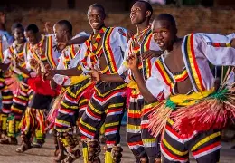

📌 My Itinerary: 0 saved experiences
Living Heritage of Uganda
From delicious street food to vibrant dances – experience the soul of the Pearl of Africa.
Cultural Treasures
Rolex
Street food – nationwide
Rolex is a beloved Ugandan snack made by rolling eggs and fresh vegetables inside a chapati. It's tasty, affordable, and a must‑try for any visitor.
Matoke
Traditional staple
Steamed green bananas mashed and served with groundnut sauce, meat, or beans. Matoke is the heart of Ugandan home cooking and communal meals.

Traditional Dance
Ceremonies & festivals
Each tribe has unique dances – from the energetic Bakisimba to the royal Ekitaguriro. Drums, songs, and colorful regalia celebrate Uganda's unity in diversity.
Kasubi Tombs
Kampala
UNESCO World Heritage site, the royal burial ground of Buganda kings. A masterpiece of architectural and spiritual significance.